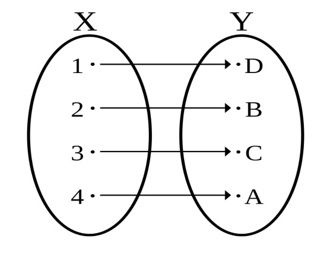
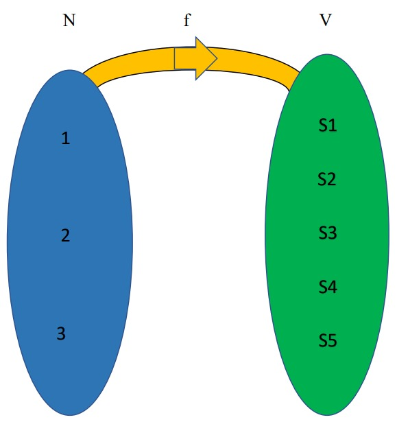

Introduction
Functions play an important role in our day-to-day lives. From obtaining numbers by rolling a die to having the best strategic methods for business, we are surrounded by the idea of relations and functions. In physics, the concept of function is applied in finding the probability distribution of particles, the position of a wave, the trajectory of a particle etc. The concepts of permutations and combinations are an extended form of function. Other examples include the growth of shares in the stock market, collection and arranging huge amounts of data, interface in programming, selection of teams at championships in various sports, cryptocurrency in digital marketing and much more. The first part will introduce the definitions of functions and mapping which will later be applied to different concepts. Functions are crucial to how we live our daily lives. We are constantly confronted with the concept of relationships and functions, from the way dice are rolled to the greatest corporate strategy. The concept of function is used in physics to determine particle probability distributions, wave positions, particle trajectories, etc. A function is extended to the idea of permutations and combinations. Other instances include the increase in stock market shares, gathering and organizing enormous amounts of data, programming interfaces, choosing teams for championships in various sports, bitcoin in digital marketing, and many more. The definitions of functions and mapping, which will later be used in other ideas, will be covered in the first section.
Concept of Sets
To understand a function, we need to first understand the concept of sets and relations to elaborate this to work with functions.
The collection of well-defined objects is called a set. The term “well-defined” is used to refer to a special property that helps us with the existence of the element in the set. The term “distinct” is used such that there is no repetitive element and all elements are different from each other.[1] It is denoted by the symbol ‘{}’.
Example:- Let ‘A’ be a set of students who have attendance less than 75%. ‘A’ is a set as those students whose attendance is less than 75% will belong in ‘A’ and they will be different from each other.
Now we will understand how it is used in the function.
Function
A function is defined as a relation from a set of inputs to a set of possible outputs in such a way that each input is related to exactly one output.[2]
Let X and Y be two sets and let f be a function from X to Y such that f: X→Y.
Then every element of the set X is related to a corresponding element in set Y and this is represented using arrows from one set to another as shown below:-
Figure 1: Mapping of a Function
The set of all the elements present in X is called the domain and the set of all the elements present in Y is called the codomain. The set of elements in Y that are mapped to the elements in X is called range.
Here all numbers present in X are related to all the alphabets present in Y. Hence it is a function from X to Y. The process involved in relating one element to another is called mapping.
There are many possibilities for mapping one element to another and all these possibilities lead to many numbers of functions according to the mapping of elements. Hence function mapping becomes an important aspect in exploring the various possibilities and this will give a basic understanding of how mapping takes place.
Note:- If a set S has m elements and a set K has n elements then the total number of functions from S to K that can be formed is nm.
Example:- We will refer to the concept of statistical physics. Let us consider 4 particles A, B, C, and D kept in 3 cells C1, C2, and C3. Let S={A, B, C, D} and K={C1, C2, C3}. According to the above note, the number of ways in which this arrangement can take place is:
Using the concept of function mapping, let us take the function f from set S to set K such that f:{A, B, C, D}→{C1, C2, C3}
Let us perform this by taking different possibilities and verifying the result.

Figure 2: Representation of function ‘f’.
We will be considering different cases and finding several functions for each case as follows:-
Case 1:- A to C1, B to C1, C to C1
- A→C1, B→C1, C→C1, D→C1
- A→C1, B→C1, C→C1, D→C2
- A→C1, B→C1, C→C1, D→C3
So, the total number of functions at a time for case 1 = 3.
Case 2:- A to C1, B to C1, C to C2
- A→C1, B→C1, C→C2, D→C1
- A→C1, B→C1, C→C2, D→C2
- A→C1, B→C1, C→C2, D→C3
So, the total number of functions at a time for case 2 = 3.
Case 1:- A to C1, B to C1, C to C3
- A→C1, B→C1, C→C3, D→C1
- A→C1, B→C1, C→C3, D→C2
- A→C1, B→C1, C→C3, D→C3
So, the total number of functions at a time for case 3 = 3.
Therefore, the total number of functions at a time keeping A, B particles at the cell C1 and arranging C, D particles among three cells C1, C2, C3 = total number of functions in case 1 + the total number of functions in case 2 + the total number of functions in case 3 = 3+3+3=9.
So, 9 functions can be formed by fixing particles A, and B and arranging particles C, D which are represented below:-
- A→C1, B→C1, C→C1, D→C1
- A→C1, B→C1, C→C1, D→C2
- A→C1, B→C1, C→C1, D→C3
- A→C1, B→C1, C→C2, D→C1
- A→C1, B→C1, C→C2, D→C2
- A→C1, B→C1, C→C2, D→C3
- A→C1, B→C1, C→C3, D→C1
- A→C1, B→C1, C→C3, D→C2
- A→C1, B→C1, C→C3, D→C3
Now we will fix particle A in cell C1 and arrange particles B, C, and D into three cells C1, C2, and C3.
Case 4: A to C1, B to C1
- A→C1, B→C1, C→C1, D→C1
- A→C1, B→C1, C→C1, D→C2
- A→C1, B→C1, C→C1, D→C3
- A→C1, B→C1, C→C2, D→C1
- A→C1, B→C1, C→C2, D→C2
- A→C1, B→C1, C→C2, D→C3
- A→C1, B→C1, C→C3, D→C1
- A→C1, B→C1, C→C3, D→C2
- A→C1, B→C1, C→C3, D→C3
So, the total number of functions at a time for case 4 = 9.
Case 5: A to C1, B to C2
- A→C1, B→C2, C→C1, D→C1
- A→C1, B→C2, C→C1, D→C2
- A→C1, B→C2, C→C1, D→C3
- A→C1, B→C2, C→C2, D→C1
- A→C1, B→C2, C→C2, D→C2
- A→C1, B→C2, C→C2, D→C3
- A→C1, B→C2, C→C3, D→C1
- A→C1, B→C2, C→C3, D→C2
- A→C1, B→C2, C→C3, D→C3
So, the total number of functions at a time for case 5 = 9.
Case 6: A to C1, B to C3
- A→C1, B→C3, C→C1, D→C1
- A→C1, B→C3, C→C1, D→C2
- A→C1, B→C3, C→C1, D→C3
- A→C1, B→C3, C→C2, D→C1
- A→C1, B→C3, C→C2, D→C2
- A→C1, B→C3, C→C2, D→C3
- A→C1, B→C3, C→C3, D→C1
- A→C1, B→C3, C→C3, D→C2
- A→C1, B→C3, C→C3, D→C3
So, the total number of functions at a time for case 6 = 9.
Hence, the total number of functions at a time keeping A particle fixed at cell C1 and arranging B, C, and D particles among three cells C1, C2, and C3
- total number of functions in case 4 + the total number of functions in case 5 + the total number of functions in case 6
- 9 + 9 + 9
- 27
Similarly, if we arrange particle A in the next two cells and continue the process, then the total number of ways of arranging 4 particles in 3 cells = the total number of functions mapping from set S to set K= 27 + 27 + 27 = 81 = 34.
This method of making sets and making different possibilities is easier in comparison to thinking which particles will be placed where all at a time. There are many ways to solve a problem and by exploring those methods, we are broadening our knowledge of understanding the core concept and adapting to different methods will give us different perspectives of approaching a problem.
Now, we will explore this method to understand the concept of permutations and combinations and will check the validity of this method.
Permutation
A permutation is a mathematical technique that determines the number of possible arrangements of elements in a set where the order of the arrangement matters[3].
Example:- If we want to arrange 2-digit numbers, we can use the concept of permutation since the interchanging of digits results in a different number and hence order matters. Permutation can be of repetition or non-repetition. Here we will discuss the second case.
Consider a set Y consisting of a total of u elements and let v elements be taken at a time which is to be arranged in a particular order.
There are several ways of arranging v elements from u elements such that the order matters are given by:
Example:- Suppose you are using apps like Google Pay, Paytm, PhonePe etc. for money transactions and you are supposed to enter a PIN that will protect your money and you can also access the bank balance using this PIN. This PIN will contain a 4-digit number which is given by the user. If you have the choice of picking 5 numbers like 1,4,7,3,9 and have to create a PIN using these numbers, then in how many ways can you create a PIN provided that no repetition is allowed and the order of numbers matters?
This is a concept of permutation and using the formula the number of arrangements is
Now, we will verify this answer using the method of mapping.
Consider two sets S of 5 numbers and K of 4 places for arranging these numbers. Then we have P={1,3,4,7,9} and Q={W, X, Y, Z} where W is the first place, X is the second place, Y is the third place and Z is the fourth place. Let g be a function from Q to P such that g:{W, X, Y, Z}→{1,3,4,7,9}. The set representation along with function g is shown below:-
Figure 3: Representation of a function ‘g’
We will take different cases of mapping the elements. Here no more than one element in the set Q can be mapped to the same element in P. Hence, this one differs from the total number of functions from Q to P.
In the first case, we will fix the first two places and change the third and fourth places accordingly.
Case 1:- W to 1, X to 3, Y to 4
- W→1, X→3, Y→4, Z→7
- W→1, X→3, Y→4, Z→9
Hence, the total number of functions at a time for case 1 = 2.
Case 2:- W to 1, X to 3, Y to 7
- W→1, X→3, Y→7, Z→4
- W→1, X→3, Y→7, Z→9
Hence, the total number of functions at a time for case 2 = 2.
Case 3:- W to 1, X to 3, Y to 9
- W→1, X→3, Y→9, Z→4
- W→1, X→3, Y→9, Z→7
Hence, the total number of functions at a time for case 3 = 2.
Therefore, the total number of functions at a time keeping the first two places with the same number and assigning different numbers in the last two places
- total number of functions in case 1 + the total number of functions in case 2 + the total number of functions in case 3
- 2 + 2 + 2
- 6
In the next set of cases, the first place will be fixed and other places will contain different numbers.
Case 4:- W to 1, X to 3
- W→1, X→3, Y→4, Z→7
- W→1, X→3, Y→4, Z→9
- W→1, X→3, Y→7, Z→4
- W→1, X→3, Y→7, Z→9
- W→1, X→3, Y→9, Z→4
- W→1, X→3, Y→9, Z→7
Hence, the total number of functions at a time for case 4 = 6.
Case 5:- W to 1, X to 4
- W→1, X→4, Y→3, Z→7
- W→1, X→4, Y→3, Z→9
- W→1, X→4, Y→7, Z→3
- W→1, X→4, Y→7, Z→9
- W→1, X→4, Y→9, Z→3
- W→1, X→4, Y→9, Z→7
Hence, the total number of functions at a time for case 5 = 6.
Case 6:- W to 1, X to 7
- W→1, X→7, Y→3, Z→4
- W→1, X→7, Y→3, Z→9
- W→1, X→7, Y→4, Z→3
- W→1, X→7, Y→4, Z→9
- W→1, X→7, Y→9, Z→3
- W→1, X→7, Y→9, Z→4
Hence, the total number of functions at a time for case 6 = 6.
Therefore, the total number of functions at a time keeping the first place fixed and assigning different numbers in the remaining places
- total number of functions in case 4 + the total number of functions in case 5 + the total number of functions in case 6 + the total number of functions in case 7
- 6 + 6 + 6 + 6
- 24
Similarly, if the first place is assigned with 3,4,7,9 then the number of ways of achieving this will be 24 for each case.
Therefore, the number of ways of forming a 4-digit number using 5 digits at a time = 24 + 24 + 24 + 24 + 24 = 120 ways.
Hence, we get the same result using this method as we got from the formula used above.
Now we will look at the concept of combination through this method.
Combination
A combination is a way of choosing elements from a set and arranging them such that the order doesn’t matter[4]. Here some objects are selected from the collection of objects and so the order in which the objects are placed doesn’t matter at all. Combinations can be repetitive and non-repetitive. We will be discussing the non-repetitive case.
Consider a set D consisting of a total of h elements and let b elements be taken at a time which is to be arranged in a particular order.
The number of ways of arranging v elements from u elements such that the order matters is given by:
Example:- Consider a cultural event taking place and 4 students are taking part in a class. Due to more number of participants required, a decision has been taken that only 3 students can be selected from that class for the events. In how many ways can the three students be picked from five students for the event?
This is a problem of combination where three students have to be randomly selected from five students and here the order in which they are selected doesn’t matter so the number of ways in which this task is achieved
= C(4,3) = 5!⁄3! * (5-3)!
= 5*4*3*2*1/3*2*1*2*1
= 120/12
= 10 ways.
We will verify this result using the concept of mapping. Let V be the set of five students and let N be the set of numbers from 1 to 3. Let V={S1,S2,S3,S4,S5} and N={1,2,3}. Let f be the function from set N to set V such that three students are selected. The function f is represented as f:{1,2,3}→{S1, S2, S3, S4, S5}.
The set representation along with function f is shown below:-
Figure 4: Representation of function ‘f’
Since repetition is not allowed, no more than one element in set N can be mapped to the same element in V.
First, we will consider the first student to get selected in S1 and the second student to get selected in S2.
Case 1:- 1→S1
- 1→S1, 2→S2, 3→S3
- 1→S1, 2→S2, 3→S4
- 1→S1, 2→S2, 3→S5
Hence, the total number of functions at a time = 3.
Case 2:- 1→S2
- 1→S2, 2→S3, 3→S4
- 1→S2, 2→S3, 3→S5
Hence, the total number of functions at a time = 2.
Case 3:- 1→S3
- 1→S3, 2→S4, 3→S5
- 1→S3, 2→S1, 3→S5
- 1→S3, 2→S1, 3→S4
Hence, the total number of functions at a time = 3.
Case 1:- 1→S4
- 1→S4, 2→S2, 3→S5
- 1→S4, 2→S1, 3→S5
Hence, the total number of functions at a time = 2.
Therefore, the number of ways in which 3 students are selected from 5 students at a time
- total number of functions in case 1 + the total number of functions in case 2 + the total number of functions in case 3 + the total number of functions in case 4
- 3 + 2 + 3 + 2
- 10ways.
This verifies the above result with the one obtained by the formula
Conclusion
In our daily lives, we come across various situations of arranging and selecting objects using the concept of permutations and combinations. The method of representing sets and mapping elements not only gives us the right answer but also makes us understand the process taking place. Mathematics is not just about solving problems and getting correct answers but it is also about understanding the problem and coming up with various possibilities to approach the problem. This enhances the knowledge and gives us opportunities to have different perspectives while understanding things.
Hence, logic and proofs are as important as problems in mathematics because it helps us to understand the logic involved in the proof as well as helps us in constructing our own proofs. I would conclude by saying that life has given sufficient opportunities to everyone so try to explore new things and have the curiosity in learning something unique.
References
- Math-Only-Math.com, "Sets," 2010-2022. [Online].
Available: https://www.math-only-math.com/sets.html.
[Accessed Tuesday, January 2023]. - N. DQ, "Function definition," [Online].
Available: https://mathinsight.org/definition/function.
[Accessed Tuesday, January 2023]. - CFI, "Permutation," 2015-2023. [Online].
Available: https://corporatefinanceinstitute.com/resources/data-science/permutation/.
[Accessed Wednesday, January 2023]. - Brilliant, "Combinations," [Online].
Available: https://brilliant.org/wiki/combinations/.
[Accessed Wednesday, January 2023].